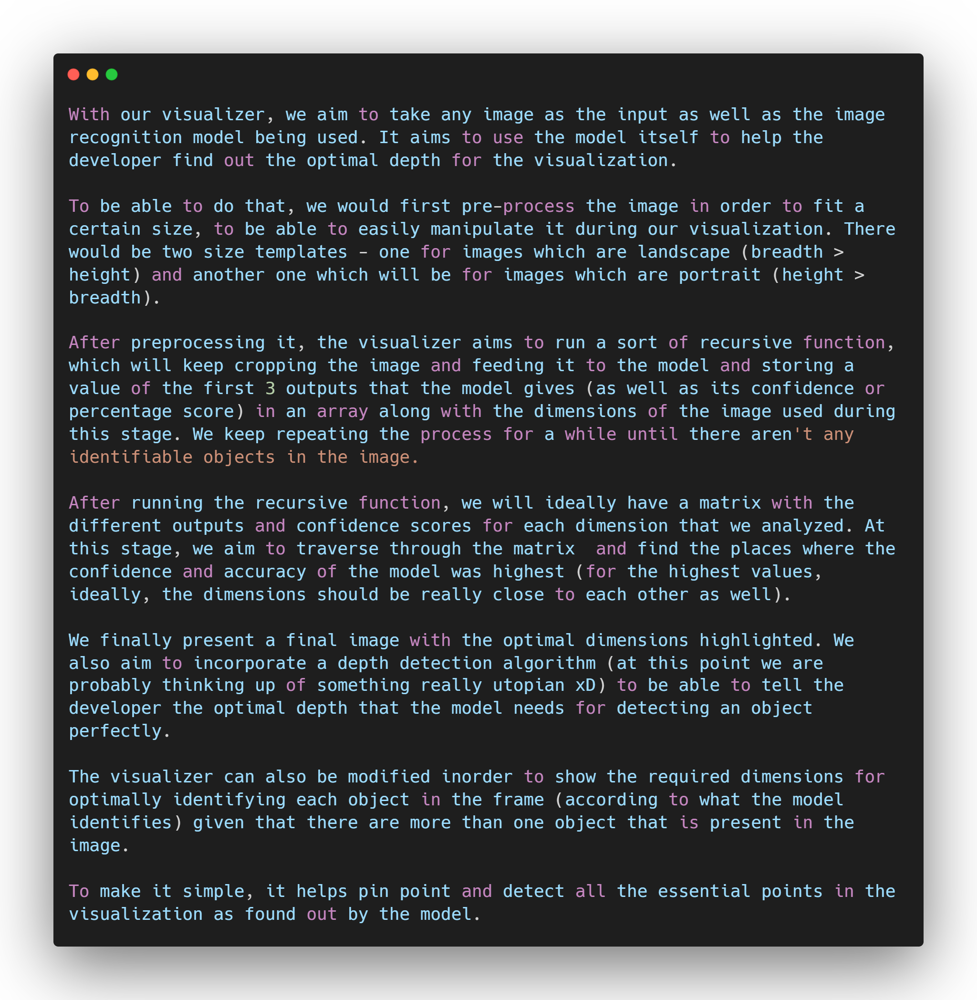

A depth analyzing visualizer
So the visualization!

When looking at an object, there is always an optimal depth or distance from our eyes, where the object is most distinct or clear - this is the point where we can just glance at the object and we should be able to easily recognize what it is, that is identify it.
For computers, using machine learning to recognize an image, it's not any different. For any model, there is usually a certain distance or depth where it is able to give the most accurate results or predictions. This distance might not be a fixed distance, as different models use different algorithms to do the same task and thus the distance or optimal depth also vary according to that. Our aim is to build a visualizer that helps the developer recognize the optimal distance.
Hmm, tell me more about it
A prototype of how a well coded visualization might look
We can also include features like being able to see the few best visualizations or the required depths that allowed the model to give responses with the highest confidence. If we are being ambitious we can also put all of them together in the form of a video. At this point we can also delve deeper into this and build up more visualizations like a graph for example, depth or distance of object versus accuracy as well, which might also end up being helpful for the developer. For that, we'd need to run a depth detection algorithm for each iteration and store that in our array as well. The possibilities of working and improving on this visualization is pretty endless once implemented.
Okay, but why is this visualization helpful?
We like to believe that the visualization can be extremely helpful especially for robots like me! Something like this can help me decide the optimal zoom or depth that I should maintain in order to be properly able to detect objects around me so that I don't hit anything.
I hope you liked my idea. If you did, please don't forget to help my idea win, I'm sure my developer friends would be really happy ;b